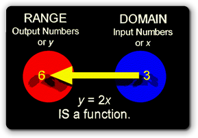
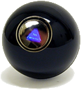

In the last section, you looked at Java's
arithmetic operators, and learned how to write expressions.
Many calculations, however, require more than a simple expression.
To meet this need, most programming languages have
libraries, collections of reusable functions that
are used to build more complex software.
In the last section, you looked at Java's
arithmetic operators, and learned how to write expressions.
Many calculations, however, require more than a simple expression.
To meet this need, most programming languages have
libraries, collections of reusable functions that
are used to build more complex software.
To meet this need, the Java class libraries include the java.lang.Math class which contains functions for numeric operations such as calculating roots, sines and exponents.
Functions and the Math Class

Thejava.lang.Math class
contains a set of functions for basic numeric operations.
Similarly, the String class contains functions that
provide information about String objects.
So, what, exactly, is a function?
A function in programming is similar to the mathematical definition of a function. In math, a function is a relationship between inputs and outputs, so that any individual input maps to exactly one output.
In programming languages, a function is a command that takes zero or more inputs, and then returns a value based on the input value. You can use functions in place of literal values, variables or expressions in your programs.

Think of a function as "calculating black box", kind of like the magic eight-ball. You ask it a question (that's the input to the function) and it "answers" you by giving you back or returning a result.Normally, you'll create a variable to store the result returned from a function, but you can also print the value, or pass it as a parameter to another method. Calling a function without storing or otherwise using the returned value is a common logical error in many programs.
Locating the Math Class
Object-oriented libraries are called class libraries, and in Java,
these class libraries are organized into smaller "family" groups
called packages. To use the code in a package, you import
the package, like we did for the Scanner class in the
java.util packagee.
The functions in the Math class are part of the
java.lang package, however, which is automatically
loaded and referenced by your Java Virtual Machine. You don't
have to add any import statements to use any of the
classes contained in java.lang.
Actually, you never have to use import statements to
access any class in any Java library. Instead, you can use the
fully qualified name, like java.util.Scanner
in your code, and skip the import statements altogether.
All the import statement does is make your code simpler,
and easier to read.
Using the Math Functions
To use the methods in the Scanner class, you first had to
create a Scanner object. You don't have to do that
with the Math class. (Indeed, you cannot!). The Math
class is not used to create objects; instead it is a collection of functions
that can be used without creating any objects. In Java, such functions are called
static methods.
When you want to call one of the Math functions, you use the same
receiver.request(arguments) syntax that you used with
System.out.println(), but the receiver is the Math
class, instead of an object, like System.out.
For instance, if you wanted to print the square root of 7.5923,
you would use the Math.sqrt() method, like this:
System.out.println(Math.sqrt(7.5923)); // USE the value
In this case:
Mathis the receiver.sqrt()is the request or function you are calling.7.5923is the argument you are passing to thesqrt()function.- The value returned after calling
sqrt()is then passed as the argument to theprintln()method.
Using the value produced by calling the function, as shown here, is perfectly fine. Normally, though, instead of using a function value directly, you'll save it in a variable, and then use the variable when you need it, like this:
double root = Math.sqrt(7.5923); // SAVE the value
System.out.println(root); // Now USE the value
This way you don't need to calculate the function value over and over. You can just calculate it once.
The WRONG Way
The most common mistake I see when students learn to use functions,
is to just call the function, like they would call a
method like System.out.println(). Here's an example:
Math.sqrt(7.5923); // LOGICAL ERROR
This is always a logical error, because the code has no effect.
More Math Functions
The Math class contains the normal set of functions
that you'd expect in a rudimentary math library. Java doesn't have a
exponential operator, but it does have a function
named pow() that will raise any number to a power.
Here's its signature:
double pow(double a, double b)
The method returns a raised to the bth
power as a double. Both parameters are of type double, but you can
pass int parameters as well. Here's an example:
double cubed = Math.pow(2, 3); // 2 * 2 * 2 or 23
double ans = Math.pow(2.1, 3.1); // 2.1 to the 3.1 power
int, the returned result is type double.
That means that just as variables have types, so do functions.
Note in the second example, that either, or both arguments may be
double as well.
You may also want to make use of the
Math class constants: E which represents
the irrational mathematical constant e, and
PI. Here's an code fragment that uses both Math.pow()
and Math.E to calculate the effective annual interest rate on an
investment if the interests is calculated (or compounded) monthly,
or "infinitely":
// Calculate some effective interest rates
double apr = .10; // 10%
double monthRate = Math.pow(1 + (apr / 12), 12) - 1;
double infRate = Math.pow(Math.E, apr) - 1;
System.out.println("APR of 10%");
System.out.println("Monthly compounding: " + monthRate);
System.out.println("Continuous compounding: " + infRate);
Other Functions
In addition to Math.sqrt(),
there are also min() and max() functions for
finding the minimum and maximum of two values.
The Math.abs() function returns the absolute
value of a number, while the Math.round()
function returns the closest integer value to its
floating-point arguments.
Less frequently used methods (depending upon your interests, of course) include
the methods for performing logarithm and trigonometric functions.
Here's a brief list:

Math.random()
One Math function that I think you'll find very useful
in your program simply generates "random" numbers. I find uses for this
everywhere, from shuffling a deck of cards to calculating the trajectories
for the aliens attacking my earth base. To use it,
you call the Math.random() method like this:
double rand = Math.random();
After you've done this, the double variable
rand will contain a number between 0.0
and 1.0. (The number will always be less than 1.0,
but it may include 0.0.)
The number returned by random() is called a
pseudorandom number, because the numbers produced by
the function repeat themselves if given the same starting
value (called the seed).
A number between 0.0 and 1.0 might not seem very useful by itself, but it is easy to "massage" the results into a form you can use, by using some of the calculations you saw in the previous section. Here's a possible application, for instance.
Pick a Year, Any Year
Suppose you need to pick a random year from a particular decade; you might be writing a Trivia application like the greatest country music hits from the 1950s, for instance, or something similar.
To do this, you need to know two pieces of information:
- How many possible numbers are there?
- What's the lowest possible number?
For the "greatest hits" application, there are ten possible numbers, (1950, 1951,...1959), and the lowest possible number is 1950. Let's create a couple of constants to represent those two values:
final int RANGE = 10; // How many possible numbers?
final int FLOOR = 1950; //Starting number
Math.random() to
generate a random number for our featured year,
but before storing it in the variable, we'll manipulate it like this:
- Multiply the result by RANGE because we have 10 possibilities.
- Because
Math.random()can return 0.0, but never 1.0, add FLOOR to the result. - Because each year must be an integer value, cast
the result to an
int.
Here's what these steps look like in code:
int year = (int)(Math.random() * RANGE) + FLOOR;
The + FLOOR portion of the expression can go
inside or outside of the parentheses, but the multiplication
and the call to the Math.random() method must be
inside the parentheses. If you fail to do this, your
"random" numbers will all be the year 0, which
is probably not what you want.